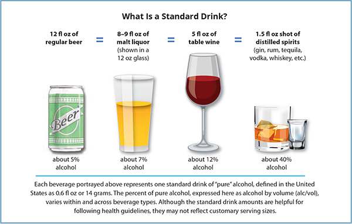

Made wholesomely by Trevor Bruecher, Ari Norberg and Jillian Honrade
The Problem:
This Explorable Explanation focuses on the misunderstanding surrounding alcohol consumption and the negative consequences that can have on society. Many people do not fully understand the effects alcohol can have on them - particularly, how much alcohol is a safe amount to consume in a given time frame and for their specific body type, and whether or not they should take certain drugs with alcohol. This can lead to a multitude of consequences for the person and those around them, and can range in severity from minor to deadly.
The Extent.
Alcohol Consumption is a prevalent part of American society. In just the last month, 56% of all adults (18+) have reported they have consumed alcohol, and 27% have reported they partook in binge drinking. Many Americans are engaging in alcohol consumption, but not all of them are doing so in a safe, responsible and well-informed manner.
The Impact.
There are 88,000 alcohol related deaths in the US every year; 2000 of them are caused by alcohol poisoning alone. This makes alcohol the third leading cause of preventable death in the county. In addition to the fatal outcomes, alcohol consumption also causes many other risks to the body, such as injury, immediate and long-term health effects, and increased substance abuse and addiction. There are also many social and economical effects alcohol consumption can have on an individual and the society as a whole.
Drugs and Alcohol.
Awareness surrounding the potentially dangerous consequences of mixing drugs and alcohol is another aspect in this problem. A recent medical study found that from 1983 to 2004, deaths caused by CDI (combined drug intoxication) rose 360.5%. Meaning there are more and more people dying from unknowningly taking certain drugs with alcohol that they shouldn't.
Motivation:
We hope that this explorative explanation will be used to help people make safer and more informed choices when drinking, and ultimately prevent and reduce the negative consequences related to alcohol consumption. Both on a small scale, such as to help people avoid adverse drinking symptoms and hangovers. As well as on a large scale, such as avoiding unnecessary deaths and injury. This tool is designed for those who drink, as well as though who don’t or can’t drink, as everyone can benefit from being more aware and more informed. Overall, we hope to promote a healthier and more responsible culture around alcohol consumption.
BAC (Blood Alcohol Content):
Blood Alcohol Content is a metric for measuring alcohol intoxication. This unit of measure is typically calculated in mass by volume, in which 1% BAC is equivalent to 1% of a person’s blood concentration (1g of alcohol per 100g of blood in a person’s body). As BAC rises so does a person’s impairment. In the United States, the Legal Limit (alcohol level at which a person is considered legally impaired) is .08% BAC. A BAC of over .30% is considered life-threatening, and the person will be in high risk of severe alcohol poisoning and death.
Alcohol metabolism occurs a lot slower than alcohol absorption. Meaning the time taken for a person to sober up will be longer than the time that was taken for them to get intoxicated. Alcohol absorption can vary quite differently across individuals due to various physicological and situtional variables. The ability to metabolize alcohol can also vary across individuals but tends to occur at more of a similar rate for most people. Regardless of how much a person drinks, once they reach their peak BAC, the liver is only able to burn off around 0.5 oz. alcohol per hour or .015% of blood alcohol content (BAC) per hour.
Intoxication:
Alcohol intoxication (a.k.a.drunkenness) is a physiological condition that occurs when a person consumes alcohol. The effects are physical (affect the body and its functions) as well as psychological (alter state of mind/consciousness). Symptoms include nausea, vomiting, slurred speech, loss of memory, and ataxia (inability to control body movements). People may also experience feelings of euphoria or dysphoria, social inhibition, decreased decision-making ability, and confusion and disorientation. Intoxication symptoms will differ at different blood alcohol content levels, and increase in severity as BAC increases. At high doses alcohol consumption can lead to coma or death. Note: these symptoms focus on the immediate effects of alcohol, but there are also many long-term effects alcohol can have on a person’s body and life.
Hangovers:
Even when the body has sobered up (returned to a BAC % of 0), the effects of alcohol intoxication can still be felt hours and even days following consumption. Hangovers are typically used to describe the negative symptoms a person feels after they have woken up following a day of drinking. However, hangover symptoms can begin once blood alcohol content drops significantly and is at or near zero. Symptoms include, fatigue, weakness, dehydration, dizziness, headaches and muscle aches, nausea, vomiting, poor sleep, increased sensitivity to stimuli, and mood disturbances. The heavier a person drinks, the more likely they will experience a hangover, and the worst the symptoms will be.
This interactive tool simulates results for a given alcohol consumption scenario. Based on the the information provided about the simulated person’s body, the amount of alcohol they consumed, and any drugs they took, the simulator will calculate their current blood alcohol content and as well as graph of their BAC over the next 5 hours, information about the intoxication symptoms that typically occur at that BAC and the predicted hangover symptoms, as well as information regarding the level of risk involved in mixing the chosen drug with alcohol. After inputting the necessary values and pressing the submit button, the results are shown on the right side of the webpage.
The effects of alcohol can differ across each individual. Multiple factors such as gender, age, body size and composition, ethnicity, genetics, food and even a person’s mood can influence the way in which their body absorbs alcohol and their resulting level of intoxication. In order to cater the BAC results to the stimulated person’s body, please input their gender and weight.
Gender:
Weight (lbs):
A “Standard Drink” is a unit of measure that is used to compare the alcohol consumption between varying beverage types. The volume and concentration of alcohol may differ across beverages, but the amount of alcohol it contains (and the general level of drunkness it produces) should be the same. For the United States, a standard drink contains about 14 grams of alcohol. See image below for the standard drink information for beers, malt liquors, wines and spirits.

To calculate the amount of alcohol consumption you want to simulate in the results, please input the number of drinks the person consumed, the number of fluid ounces in each drink, the percentage of alcohol in each drink and the amount of time spent in drinking the drink(s) in hours.
Number of Drinks:
Number of fluid ounces in each drink:
Percentage of alcohol in drink:
Time spent drinking (hours):
While alcohol is often associated as a “fun” and “lively” drug that helps boosts a person’s energy and personality, it is actually classified as a depressant. Meaning that it slows down vital functions—resulting in slurred speech, unsteady movement, disturbed perceptions and an inability to react quickly. When taken with other drugs, the interact in the body can be dangerous and potentially fatal. To find out potential risks associated with drug and alcohol combinations, please select one of the drug options below.
Drug taken:
Note: These results do not promote or endorse any drug and alcohol combination, and all should be regarded with caution.
Blood Alcohol Content:
The % BAC is calculated using this common formula:
(A x 5.14 / W x r) – .015 x H
A = liquid ounces of alcohol consumed
W = a person’s weight in pounds
r = a gender constant of alcohol distribution (.73 for men and .66 for women)*
H = hours elapsed since drinking commenced
BAC over next 5 hours (line graph):
This line graph demonstrates the metabolism rate of alcohol (.015% BAC per hour). It begins at the simulated person’s peak blood alcohol content, and shows their BAC over the next 5 hours. This visualization can be used to gauge how drunk the person will be in the hours following their alcohol consumption, and if or when they will be sober (0% BAC) or be under the legal limit (.08% BAC) and are okay to drive.
Intoxication Symptoms:
If intoxication symptoms include mental confusion, stupor (dulled mental function and responsiveness), vomiting, seizures, slow or irregular breathing, hypothermia (low body temperature, pale or bluish skin), or difficulty staying conscious or loss of consciousness, these are indications of alcohol poisoning and should be considered as life threatening. If you suspect someone has alcohol poisoning, even if they do not showcase these symptoms, medical attention should be sought immediately.
Hangover Symptoms:
If hangover symptoms include mental confusion, stupor (dulled mental function and responsiveness), vomiting, seizures, slow or irregular breathing, hypothermia (low body temperature, pale or bluish skin), or difficulty staying conscious or loss of consciousness, these are indications of alcohol poisoning and should be considered as life threatening. If you suspect someone has alcohol poisoning, even if they do not showcase these symptoms, medical attention should be sought immediately.
Drug use with alcohol:
Low Risk & Synergy - These drugs work together to cause an effect greater than the sum of its parts, and they aren't likely to cause an adverse or undesirable reaction when used carefully. Additional research should always be done before combining drugs.
Low Risk & No Synergy - Effects are just additive. The combination is unlikely to cause any adverse or undesirable reaction beyond those that might ordinarily be expected from these drugs.
Caution - These combinations are not usually physically harmful, but may produce undesirable effects, such as physical discomfort or overstimulation. Extreme use may cause physical health issues. Synergistic effects may be unpredictable. Care should be taken when choosing to use this combination.
Unsafe - There is considerable risk of physical harm when taking these combinations, they should be avoided where possible.
Dangerous - These combinations are considered extremely harmful and should always be avoided. Reactions to these drugs taken in combination are highly unpredictable and have a potential to cause death.